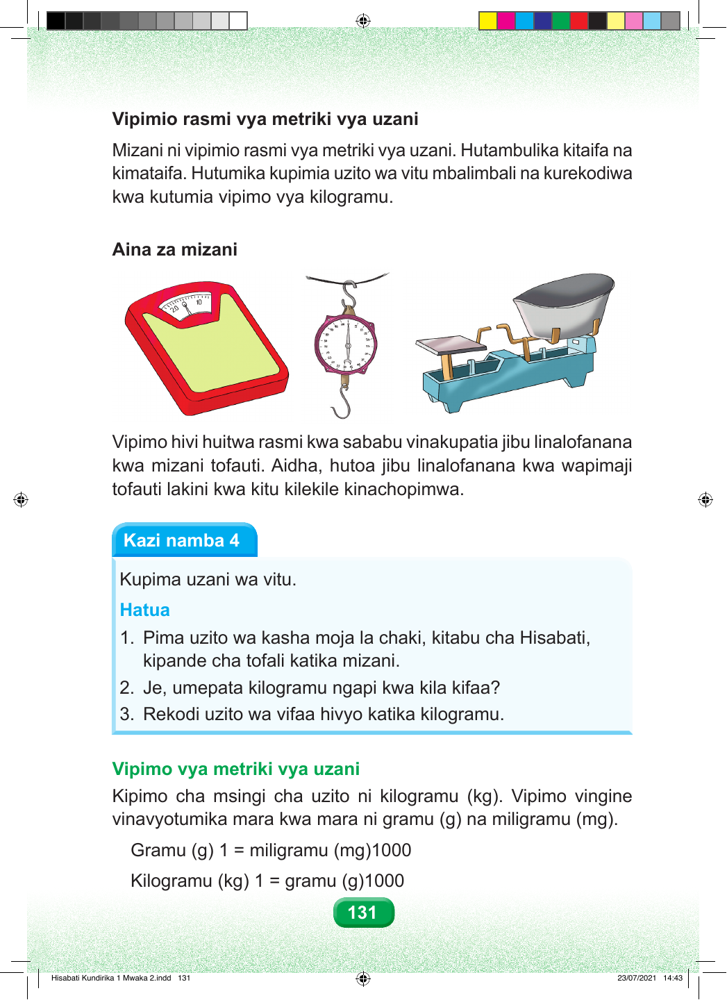

Vipimio rasmi vya metriki vya uzani Mizani ni vipimio rasmi vya metriki vya uzani. Hutambulika kitaifa na kimataifa. Hutumika kupimia uzito wa vitu mbalimbali na kurekodiwa kwa kutumia vipimo vya kilogramu. Aina za mizani Vipimo hivi huitwa rasmi kwa sababu vinakupatia jibu linalofanana kwa mizani tofauti. Aidha, hutoa jibu linalofanana kwa wapimaji tofauti lakini kwa kitu kilekile kinachopimwa. Kazi namba 4 Kupima uzani wa vitu. Hatua 1. Pima uzito wa kasha moja la chaki, kitabu cha Hisabati, kipande cha tofali katika mizani. 2. Je, umepata kilogramu ngapi kwa kila kifaa? 3. Rekodi uzito wa vifaa hivyo katika kilogramu. Vipimo vya metriki vya uzani Kipimo cha msingi cha uzito ni kilogramu (kg). Vipimo vingine vinavyotumika mara kwa mara ni gramu (g) na miligramu (mg). Gramu (g) 1 = miligramu (mg)1000 Kilogramu (kg) 1 = gramu (g)1000 131 Hisabati Kundirika 1 Mwaka 2.indd 131 23/07/2021 14:43